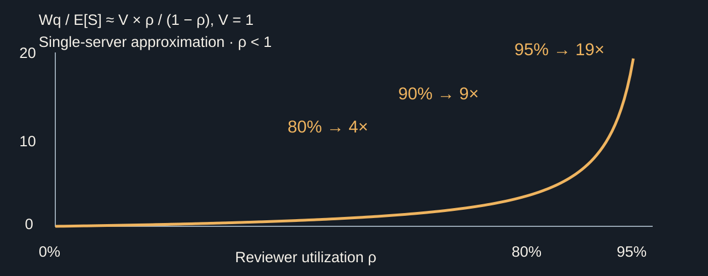

Code Is Cheap. Judgment Is Expensive. · Dan Levy
The morning four good implementations arrive
01
95% utilized → 19× waiting
02
Four plausible implementations. One reviewer.
Where does the work actually wait?
01
Idea → specification → code → review → release
02
Point at the queue before buying more throughput
A queue does not care how you feel about it

You cannot inspect quality in
01
Fewer arrivals. Smaller surprises.
02
Fix the process producing the queue.
"Add enterprise permissions"
01
Who can do what, in which tenant?
02
What happens when access changes?
03
What must never happen?
A spec reduces variance
01
Actor + tenant + action + resource
02
Revocation changes the next decision
03
Denied actions leave state unchanged
What review actually catches
01
Understanding is work
02
Defect finding · knowledge transfer · alternative designs
Demo: the rubber stamp
01
canEdit(user) = user.roles.includes("admin")
02
Test: admin user → allowed
03
PASS
Do not appoint a crumple zone
01
Responsibility must come with control
02
Who accepts, recovers, and maintains?
Three levers on the queue
01
Arrivals: decline work before generating it
02
Variance: bounded diffs and explicit behavior
03
Utilization: reserve actual review capacity
Measure the wait, not the output
01
Ready → first review → accepted
02
Hands-on review time ÷ available review time
03
Queue age and escaped defects beside throughput
Knowing when to stop